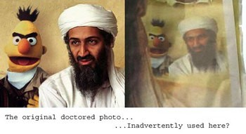

|
Feedback |
|
These are the archive pages, for the current pages please
visit Rotten News.
If you like this page, hate it, or would like to suggest changes or links,
news@rotten.com is listening. This page
is experimental and somewhat different from what we usually offer, so please
do send your feedback. While there is a lot of WTC news, it isn't intended
as a WTC page, "normal programming" will probably resume shortly.
|
|
|
Archive
Wednesday October 31, 2001
Hacker Jailed for Sewage Attacks
The Register | Submitted by: thbb
"An Australian man was today sent to prison for two years after he was found
guilty of hacking into the Maroochy Shire, Queensland computerised waste
management system and caused millions of litres of raw sewage to spill out into
local parks, rivers and even the grounds of a Hyatt Regency hotel."
|
|
Read article...
|
|
Information Lockdown
The Nation | Submitted by: Soylent
The U.S. government wants to remove the policy of open information in favor
of a "born secret" standard, where any information that the public wants must
be pried out through legal means. Even if the information wanted has
nothing to do with terrorism: "Ashcroft reverses this presumption,
instead calling on agencies to withhold information whenever the law
permits: You can be assured that the Department of Justice will defend your
decisions." This new atmosphere is reminiscent of East Germany, frankly.
|
|
Read article...
|
|
Move along now
Knight Ridder | Submitted by: thbb
Apparently we are letting highly suspicious persons free because of
blatant incompetence. Six middle eastern men were stopped in the midwest with
photographs and/or plans for nuclear reactors and the Trans-Alaskan Pipeline,
but were let go after their visas were in order.
|
|
Read article...
|
|
ANTHRAX brings out the best
Lincoln Journal-Star | Submitted by: Coal
"He's been flipped off, scowled at, talked about and judged. The worst, he
said, was a woman with a carload of kids who saw his license plate. Onstad
could see her mouth these words to her children: Don't you ever grow up
to be like that."
|
|
Read article...
|
|
Explanation of Tunguska
BBC | Submitted by: Soylent
"A flash fire burned thousands of trees near the impact site. An atmospheric
shock wave circled the Earth twice. And, for two days afterwards, there was so
much fine dust in the atmosphere that newspapers could be read at night by
scattered light in the streets of London, 10,000 km (6,213 miles) away."
|
|
Read article...
|
|
Just shoot me
Associated Press | Submitted by: Soylent
Teenagers with nothing to do? "Kenneth Stabler, 16, of Mount Vision, was shot
three times, Christopher Ruke, 16, of Morris was shot twice, and James Fisher,
17, of Morris, was shot once, according to police." Why were they shot?
They took turns shooting each other with a .22 because it's apparently fun.
|
|
Read article...
|
|
Choccolocco Monster
Anniston Star | Submitted by: Soylent
"When the shots rang out, Neal Williamson was standing on the side of
Choccolocco Road, draped in a white sheet and holding a cow skull above his
head. He was doing a little dance, which, when combined with the outfit, made
him the Choccolocco Monster, the chimera that haunted these backwoods for
days more than three decades ago."
|
|
Read article...
|
|
Texas protected by Luftwaffe
Dallas Morning News | Submitted by: Tuff
"The four-page ad in Texas Monthly shows the officer in crisp, gilt-edge dress
blues against a backdrop of the American stars and stripes. But the uniform is
of the Luftwaffe, complete with military insignias and a name-tag bearing the
German flag."
|
|
Read article...
|
|
Tuesday October 30, 2001
Snooker champ accused of Rape
Nine MSN | Submitted by: Scarecrow
Say it ain't so -- Quinten Hann, one of the top snooker champions in Australia,
is accused of raping a woman at London's Savoy Hotel. He is out on bail
"after District Judge Mr Nicholas Evans was told that remanding him in custody
would not only reduce his income but could threaten his world No.25 ranking and
his snooker career."
|
|
Read article...
|
|
They will know where you were
Guardian | Submitted by: Soylent
It's well known that if you have a cellular phone, your location can be
pinpointed fairly accurately. But now it's been revealed that since 1999,
Virgin (a cell UK telephone provider) has been keeping records of the
locations of the phones -- forever. Which means that they can track your
whereabouts over that span of time, who who you visit, where you go, how
often you potty, etc. Big Corporate is Watching You.
|
|
Read article...
|
|
McVeigh connected to Iraqi Extremists?
Insight | Submitted by: Mr. Ramon
Excellent article exploring the possibility that the White supremacists and
other domestic extremists within the United States may have strong ties to Iraq
and other Muslim terrorist organizations. One focus of the article is on Tim
McVeigh and Terry Nichols, who supposedly worked alone in planning the Oklahoma
City bombing. "Ramzi Yousef was in the Philippines at the same time as Nichols
and visited the same city out of which the Oklahoma City bombing was planned. I
doubt that connection ever was pursued." Yousef is currently in prison for
the first WTC bombing in 1993.
|
|
Read article...
|
|
Operation Northwoods
American Politics | Submitted by: D Fulmer
"A plan, crafted in exquisite detail, was drafted describing the scope of
Operation Northwoods, and was later signed in approval by all of the Joint
Chiefs. Citizens would be shot in the streets. Boats of Cuban refugees would be
sunk on the high seas. Bombings would be perpetrated within Washington D.C. and
Miami. There were even plans to fake the hijacking, and later the destruction,
of a civilian aircraft."
|
|
Read article...
|
|
Inuit coffins erupting from rest
Washington Post | Submitted by: Soylent
"Here on Herschel Island, a windy mound of land off the north-western tip of
Canada, graves are pushing up from the ground as the ice within the carpet of
permafrost melts, spitting up foreign contents, sending whole hill slopes
sliding downward. On a far tip of this island an entire grave site one day got
up and slipped into the sea."
|
|
Read article...
|
|
Monday October 29, 2001
Inside the Kursk
Associated Press | Submitted by: Mr. Ramon
Now that the Kursk has been raised, investigators are piecing together
the events during and after the explosion. Much of the crew, including
command, was killed instantly. The few remaining suffocated from lack
of air, there was not time to drown. "What happened inside these compartments
was hell," said Russian Prosecutor General Vladimir Ustinov.
|
|
Read article...
|
|
Dengue Fever
Newsmax | Submitted by: Michelle
As if there weren't enough bioterror already, perhaps Dengue Fever is next.
It's a longshot -- but the first cases since 1943 were reported last month,
in Hawaii. That outbreak is more or less contained, but Dengue is a nasty
bug, according to a State senator who was afflicted, "50 times worse than
any flu or cold I ever had."
|
|
Read article...
|
|
Iran cracks down on satellite
World Tribune | Submitted by: Soylent
The government of Iran is embarrassed by a groundwell of support by its
citizens for the United States, and has taken steps to stop the flow of
information to its people. Already 1000 satellite dishes have been seized,
with perhaps 150,000 more seizures contemplated.
|
|
Read article...
|
|
Devils Night in Detroit
Detroit Free Press | Submitted by: Soylent
Every year before Halloween, kwazy kids set hundreds of fires in Detroit,
in a tradition going back to the 19th century. Perhaps by lamely renaming
it "Angels Night", the mayor hopes to put a stop to the flammable evening --
but arson's foes have been trying since 1994 to do just that.
|
|
Read article...
|
|
Man Bites Kitten
NZPA | Submitted by: null
Hate leads to suffering (and furballs). "A man who is alleged to have almost
bitten off the head of a kitten yesterday still had fur in his mouth when taken
into custody, New Zealand police said."
|
|
Read article...
|
|
Sunday October 28, 2001
Microwaving People
New Scientist | Submitted by: Soylent
The latest crowd control weapon devised by scientists is to... microwave
mass groups of people, causing their skin to heat to painful temperatures.
They (yes, it's those "them" again) say that it's necessary to be
under the beam for 250 seconds before damage results. Of course this seems
to assume that none of the beams are going to hit anyones eyes.
|
|
Read article...
|
|
Monkey Clones!
Sunday Times | Submitted by: Soylent
Embryos from Rhesus monkeys have been cloned, at the Oregon Regional
Primate Research Center. While this work somewhat applies to human cloning
(monkeys and humans both being primates), the principal interest in the
Center is to create a race of identical monkeys, suitable for laboratory
experiments. A good lab monkey can sell for $50,000 -- if you can get one.
|
|
Read article...
|
|
Mexican star impregnates self with smuggled semen
Observer | Submitted by: Soylent
"The dramatic fall from grace of Gloria Trevi, once Mexico's most successful
pop star, took an increasingly bizarre turn last week when a police
investigation concluded she had become pregnant in a Brazilian prison using a
syringe of semen smuggled into her cell."
|
|
Read article...
|
|
Neutralizing Paki Nukes
Times of India | Submitted by: thbb
Presence of nukes in Pakistan are a sticky question and nobody really wants
to think about what happens if the government there should fall to the
fundamentalists. "Biden was asked about an article in The New York Times on
the need to render Pakistani nuclear weapons ineffective if the Musharraf
regime falls. The Democrat senator replied: Those discussions are underway
with the Democratic and Republican members of Congress and the president on
setting those priorities."
|
|
Read article...
|
|
Saturday October 27, 2001
U.S. begging for your anti-terrorism ideas
Times | Submitted by: Crazy Quagga
Having run out of ideas after little more than a month, the Pentagon is
offering a reward to the general public to figure out a way to defeat
terrorism. "Donald Rumsfeld, the Secretary of Defence, is known to be
frustrated with his underlings’ inability to think "out of the box" in this new
kind of war, but appealing to every Tom, Dick and Harry for a good idea or two
may not do much to reassure the public that the country’s safety is in the best
possible hands." In other words, the people who dedicated their lives to
protecting this country have no clue what to do. It gives you a warm
feeling.... a warm, wet, yellow feeling in your pants, that is.
|
|
Read article...
|
|
Coroner's tale of Ground Zero
Aurora Sentinel | Submitted by: Soylent
A coroner who works for FEMA gives this account of his work at Ground Zero.
"We were picking pieces of people out of other pieces of people," Dobersen said. "I think the largest part we received weighed maybe 10 or 15 pounds. That gives you an idea of the energy and force involved."
|
|
Read article...
|
|
Reporter terrorizes sewage plant
Nashville Scene | Submitted by: Soylent
"After warning that terrorist saboteurs might try to poison Metro water with
anthrax or smallpox, WTVF-Channel 5 reporter Rob Manning thought
he'd show viewers how easily that could happen by dramatically crawling under
a wire fence just a few hundred yards from the city's water supply."
|
|
Read article...
|
|
Pinheads of Gujarat
New York Times | Submitted by: anonymous
Pinheads in Pakistan. "The small-headed ones became known as chuhas — "rat
children" — and generations of them have been abandoned here by parents to take
their place in the legend." But there is also a more sinister side: "In the
past 15 years or so, the practice of reshaping a child's skull — so evil that
many people choose to call it rumor — has been snuffed out, said Mian
Ubaidullah, a Pakistani historian who studies the chuhas."
[subscription required, unfortunately]
|
|
Read article...
|
|
Friday October 26, 2001
Spore illness sickens 400 in Mexico
Infection Control Today | Submitted by: Useless
Hundreds of Americans have gotten simultaneously ill after visiting the
Calinda Beach Hotel in Acapulco, Mexico. "The fungus naturally lives in the
soil and is found in bird and bat droppings. People can become exposed
through inhalation of spores."
|
|
Read article...
|
|
Surgeons to grow Nose inside woman's Arm
Guardian | Submitted by: Soylent
"Mr Ayliffe aims to construct a nose under the skin on Ms Yussuff's forearm
then graft it onto her face. Bone and cartilage will be taken from her ribs or
skull. Prosthetics experts will sculpt this into the frame of a nose, which
will be implanted into her forearm after the skin has been expanded. Once the
frame has settled, it will be removed together with a vein and artery and
grafted to the face."
|
|
Read article...
|
|
Cockfighting Crackdown
Associated Press | Submitted by: thbb
Cockfighting is legal in Louisiana, New Mexico and Oklahoma, but other
states are "cracking down" on the bloodsport. This article however is mostly
anecdotal and sports little evidence of any "crackdown" to speak of, though
there are some federal efforts to put a halt to interstate transport of
cocks and cockfighting materials. This seems mostly a state matter.
|
|
Read article...
|
|
al Qaida has Nukes
Times | Submitted by: Soylent
From a reliable source, the Times of London: "Osama bin Laden and
his al-Qaeda network have acquired nuclear materials for possible use in their
terrorism war against the West, intelligence sources have disclosed."
|
|
Read article...
|
|
CIA Anthraxed
CNN | Submitted by: Soylent
It was probably just a matter of time before CIA found itself on the elite
list of U.S. government institutions to get spores in the mail:
"Traces of anthrax have been found in a building at the Central
Intelligence Agency in Langley, Virginia, where incoming mail is sorted,
U.S. officials tell CNN."
|
|
Read article...
|
|
Snorting Pig Frog halts construction
Daytone Beach News-Journal | Submitted by: Soylent
"A 4 1/2-inch endangered frog that sounds like a snorting pig is delaying
a $51 million plan to build a state highway bypass -- even though the frog
may not even exist in the area."
|
|
Read article...
|
|
The Prisoner's Right to gay porn
This is London | Submitted by: Soylent
If heterosexual pornography is never censored, why is gay porn being censored?
One can argue that porno of any kind is inappropriate in a prison settings,
but so is assbuggery -- but that doesn't mean it isn't going to happen.
Prisoners who have a sexual outlet from pornography are less likely to turn
their cellmates into pillowbiters. Serial murderer Dennis Nilsen is suing
for the right to have his porn untampered, like other prisoners.
|
|
Read article...
|
|
Panic
WFTV | Submitted by: Macki
"The trooper is being decontaminated in the emergency room at ORMC. He had
pulled over a black Nissan on the turnpike. The trooper gave the driver a
ticket, the driver laughed and drove off. The trooper was overcome by some kind
of fumes, could not breathe and became disoriented."
[link dead]
|
|
Read article...
|
|
Don't Panic
Cryptome | Submitted by: Macki
The "Real" Deal about Nuclear, Bio, and Chem Attacks: Since the media has
decided to scare everyone with predictions of chemical, biological, or nuclear
warfare on our turf I decided to write a paper and keep things in their proper
perspective. I am a retired military weapons, munitions, and training expert.
|
|
Read article...
|
|
Thursday October 25, 2001
Internet filtering leaky
Wired | Submitted by: Soylent
"The difficulty in determining what are legitimate Internet news sites and
which online publishers do not have sufficiently high journalistic standards to
qualify will doom ICRA, civil libertarians predict. After all, even
rotten.com now features a news section, though the headlines do tend to
run along the lines of "Postal worker jailed for flinging feces."
|
|
Read article...
|
|
Is the anthrax domestic?
Washington Post | Submitted by: Soylent
Three nations -- the United States, Soviet Union, and Iraq -- have the
technology to create airborne anthrax. But then, "A government official with
direct knowledge of the investigation said yesterday that the totality of the
evidence in hand suggests that it is unlikely that the spores were originally
produced in the former Soviet Union or Iraq." So this leaves one likely
source for the anthrax that has been deployed -- but is it domestic terrorists
or is it stolen anthrax?
|
|
Read article...
|
|
Deep shit for Miss Cleo predicted
WPLG | Submitted by: Number-6
If you watch late night cable television in the U.S., perhaps you have seen
a fat black Jamaican woman doing phony psychic readings for people. She is now
being sued on several fronts, for copyright infringement --the "readings" are
apparently "read" out of a book-- and for fraud --hundreds of customers being
cheated out of their five minute trial period.
|
|
Read article... and
This article...
|
|
Dead son's ashes repay student loan
Associated Press | Submitted by: Soylent
In response to a bank that was harassing her about her dead son's $35,000
student loans, a Washington state woman sent the bank a bag containing her
son's ashes. "We treated it as it was an anthrax scare. It was a gray
powdery substance." Student loans to dead people are dismissed, and the
bank intends to return the ashes (which thankfully contain no anthrax,
laboratory tests now show.)
|
|
Read article...
|
|
Aryan Nations official applauds WTC attacks
Philadelpha Daily News | Submitted by: pete
Jew York City? As second-in-command of the Aryan Nations movement,
August Kreis "is a man of contradictions. Despite his ominous costume, he
looks like a cop who's eaten too many doughnuts." He holds viewpoints that
few Americans would share, Jews are "Satan's Spawn" and blacks "Mud People".
And Kreis applauds the collapse of the WTC, and although the reasoning isn't
precisely clear it seems to be because NYC has a lot of Jews living in it.
|
|
Read article...
|
|
Wednesday October 24, 2001
Marijuana Decriminalized in UK
Times | Submitted by: Sociopath
Possession of marijuana will no longer be an arrestable offense in Britain.
By moving it to the schedule of Class B to Class C drugs, police may now
concentrate on stronger drugs such as cocaine and heroin. Dealing in cannabis
will still result in jail time.
|
|
Read article...
|
|
Paki Anthrax incidents "under wraps"
International News | Submitted by: Soylent
"Two cases of anthrax attacks have already taken place in Pakistan,
involving multi-national companies, including an American bank, but for
unknown reasons officials are trying to keep them under wraps."
|
|
Read article...
|
|
Expect torture from Taliban
Newsmax | Submitted by: Soylent
Elements inside of the Taliban have warned that Americans will expect torture
and execution if they should be captured. Some pundits concur. "I expect that
we will see videos of U.S. prisoners having their heads cut off. Our enemies
will do this not only to demonstrate their 'strength' to their followers, but
also to cause us to overreact, to seek wholesale revenge against civilian
populations and to turn this into the worldwide religious war that they
desperately want."
|
|
Read article...
|
|
An Orgy Grows in Portland
Casco Bay Weekly | Submitted by: Soylent
"Once we were naked, the situation became surreal. Time slowed down, as
in a dream or during an acid trip. Although I had been planning and preparing
for this night for months, for one short moment, I questioned the reality of
what I had created."
|
|
Read article...
|
|
Fighting Nigger
Macon Telegraph | Submitted by: Soylent
Everyone needs a hobby. Roy Miller of Macon, Georgia chose his to be stamping
out the nigger entry from every dictionary south of the Mason-Dixon
line. Successful with the mediocre Funk & Wagnalls, Miller now has his sights
set on Random House and Merriam-Webster.
|
|
Read article...
|
|
Crematorium Too Loud
New Zealand Herald | Submitted by: Soylent
Residents of Kerikeri are getting all fired up over the noise caused by
the Far North Memorial Gardens Crematorium. "It's disgusting. It makes a
noise like an aeroplane on the tarmac revving up." The facility is
attempting to find a technical solution to the problem.
|
|
Read article...
|
|
What if Congress gets killed?
Fort Smith Times Record | Submitted by: Soylent
One U.S. House representative wants provisions to replace large portions
of Congress in the event of a mass killing. "What was once inconceivable might
now be a macabre possibility. A plane could crash into the U.S. Capitol, or a
biological attack could leave large numbers of people dead, setting off a
constitutional crisis."
|
|
Read article...
|
|
Tuesday October 23, 2001
Postal Worker jailed for flinging feces
Traverse City Record-Eagle | Submitted by: Mr. Ramon
"A disgruntled United States Postal worker was jailed in lieu of $1 million
bond Thursday after former co-workers told police he attacked them with three
buckets of animal feces." Holy... shit...
|
|
Read article...
|
|
Secrets of Doctor Germ
New York Post | Submitted by: Mr Ramon
Rihab Taha, an Iraqi woman whom U.N. weapons inspectors nicknamed "Dr. Germ",
is suspected by some of having masterminded the current anthrax terror
program. "In 1995, she admitted that a secret germ factory she set up near
Baghdad had made thousands of gallons of anthrax and botulism - enough to
kill millions."
|
|
Read article...
|
|
Businesses leaving Empire State Building
BBC | Submitted by: Soylent
Some businesses in New York City's Empire State Building, at 1250 feet
the tallest in the city, have decided the edifice is too much of a target.
Already 16 of the 180 tenants have left or are leaving.
|
|
Read article...
|
|
Youth hangs Self at Halloween party
Associated Press | Submitted by: LadyC
"A 14-year-old boy trying to make his role in a haunted hayride scarier
accidentally hanged himself in front of a group of people who thought he was
acting." Why didn't anyone help? "His feet were touching the ground."
|
|
Read article...
|
|
TV Commercials from Space
Japan Times | Submitted by: Soylent
Russian cosmonauts will film a commercial in space for the strange Japanese
beverage Pocari Sweat, aboard the International Space Station.
[According to the bottle: "At work, when playing sports, after bath and when
waking up, POCARI SWEAT is the most appropriate beverage to ease one's thirst
that the body needs in the varying scenes and situations in one's life."]
|
|
Read article...
|
|
United Nations wells poisoning 75 million
Nature | Submitted by: Useless
Waterwells sunk in the 70's and 80's by UNICEF and the United Nations
Childrens Fund are poisoning 75 million citizens of Bangladesh. The nation
will likely file a class action suit in Britain alleging the British Geological
Survey knew or should have known about unsafe levels of arsenic in the wells.
"Bangladesh makes Chernobyl look like a Sunday-school picnic." It is
certainly one of the largest mass poisonings in history.
|
|
Read article...
|
|
Bioterrorist Arrested in Frankfurt
Agence France Presse | Submitted by: Soylent
A Turkish man, Harun Aydin, was arrested in Frankfurt last Wednesday
with a bio suit and a training manual for Jihad. Aydin was a member of
a group that authorities suspect "was behind an uncovered plot to crash a
plane, laden with bombs, into the mausoleum of Turkey's founder, Mustafa
Kemal Ataturk, during the country's 75th anniversary
celebrations on Oct. 29, 1998."
|
|
Read article... and
This article...
|
|
Monday October 22, 2001
FBI wants to tap everything
Interactive Week | Submitted by: Soylent
Apparently not satisfied with current Carnivore tapping, the FBI intends
to require ISP's (by any means necessary) to concentrate traffic in key
locations so that all traffic may be easily tapped. This
is incredibly bad from a network design standpoint, creating centralized
bottlenecks that are then vulnerable to attack or error. And of course,
this is like requiring all people to talk to any other people not directly,
but through approved third parties, in case the government is interested
in what you are saying.
|
|
Read article...
|
|
Just Like River's Edge
Seattle Times | Submitted by: Anonymous Hieronymus
Life imitates movie which imitates life: "And for at least two days,
word of a body in the trees was the buzz at nearby Kellogg Middle School.
Police say they don't know how many students went to the library to peer
at the dead boy. But some returned and brought their friends."
|
|
Read article...
|
|
Saudis may switch sides
Associated Press | Submitted by: Soylent
Saudi Arabia is our reluctant ally in the mideast, primarily because
of fallout from the Persian Gulf war. And a prominent member of their
royal family, Interior Minister Prince Nayef, had this to say about
the Saudi's willingness to continue siding with the United States:
"He [Prince Nayef] also warned that the kingdom will side with any Arab
country that may become a target in the U.S.-led anti-terror campaign."
|
|
Read article...
|
|
Woman Ignites Husband
Kansas City Star | Submitted by: Soylent
The usual story here -- man comes home from casino at 3AM, wife is mad at
him, she pours gasoline on him and sets him afire. "Herbert Robinson Jr. told
police he was unable to see how the fire was ignited, because he had been
blinded by the gasoline."
|
|
Read article...
|
|
In hot pursuit of anthrax
Cape Times | Submitted by: Soylent
Scenario: You are a police officer and you have been given a letter,
with a skull and crossbones and the words "Death or Anthrax?", containing a
white powder. Apparently if you are a police officer in South Africa,
you take a big whiff of it and say "baby powder".
|
|
Read article...
|
|
Shit Happens doesn't happen
Bergen Record | Submitted by: DJ3dg
A former investigator for the Vermont Attorney General's Office has argued
that she had a first amendment right to carry her message, "Shthpns" on her
license plate. A federal appeals court rejected this argument. But on the
acceptable list: COWPIES, POOPER, TOOT, and SHTRBUG. [Is it too late
for CPROPHGE?]
|
|
Read article...
|
|
Elian shrine opens
Associated Press | Submitted by: Soylent
"The home includes four bicycles and the red, yellow and purple pedal car
Elian rode around the front yard. His black and blue inline roller-skates, a
purple stuffed Barney the Dinosaur and red and yellow plastic trucks and
planes lined shelves in the living room."
|
|
Read article...
|
|
Eschaton Imminent!
Lingua Franca | Submitted by: Soylent
"Assume, quite conservatively, that a billion new people will be born every
decade until the sun burns out. That makes a total of 500 quadrillion people.
At most, 40 billion people have either lived in the past or are living now.
Thus we would be among the first 0.00001 percent of all members of the human
species to exist. Are we really so special?"
|
|
Read article...
|
|
Sunday October 21, 2001
FBI investigating candy purchases
Bergen Record | Submitted by: rreynolds
Will terrorists strike against the American pagan institution of
Halloween? The FBI is investigating bulk purchases of candy
from Hackensack and Wayne, Indiana Costco stores. "We have no evidence
or information for us to suspect there is any reason to cancel scheduled
events. However, the public is encouraged to remain alert but calm."
|
|
Read article...
|
|
FBI officials call to "cast aside" civil liberties
Washington Post | Submitted by: Soylent
The first sentence of this article is fucking scary:
"FBI and Justice Department investigators are increasingly frustrated by the silence of jailed suspected associates of Osama bin Laden's al Qaeda network, and some are beginning to that say that traditional civil liberties may have to be cast aside if they are to extract information about the Sept. 11 attacks and terrorist plans."
|
|
Read article...
|
|
Bushspeak
FAIR | Submitted by: DJ3dg
"The media reaction "was understandable," Miller told me, "because it
actually reflected less on Bush's speech per se than on the moment's strange
and terrifying context. The speech was deemed 'Churchillian' because the
audience was so desperate for a proper leader at that fearful moment. At that
moment of catastrophe, there was so fierce a hunger for a national father
figure that the audience saw one in the president, who therefore came across
like Churchill, or like FDR, despite his lack of stature -- which, prior
to the shock, had been quite clear to most observers."
|
|
Read article...
|
|
Is that a boy or a girl?
Africa Online | Submitted by: Soylent
A Ghana surgeon has called for parents to examine their babies for evidence
of hermaphrodism, or congenital gender inspecificity. The surgeon "explained
that babies born as pseudo-hermaphrodites usually have stumps that could either
be the penis or the clitoris and the sex could be determined by either
physical examination or through surgery."
|
|
Read article...
|
|
The stink of cattle!
Press and Dakotan | Submitted by: Soylent
"One might only expect the occasional whiff of burnt barbecue filtering
in from Omaha's suburbs, but moviegoers leaving the Stockyards Theater on the
city's southside soon realize why they paid only $1 for a seat."
|
|
Read article...
|
|
Man Jailed over Enigma Machine
BBC | Submitted by: Soylent
An antiques dealer has been jailed for handling an enigma machine that
was stolen last year from Bletchley Park in Buckinghamshire. This particular
machine is a very rare "Abwehr" Enigma, of which only a handful remain
in existence. After the machine was stolen, the arrested man Dennis Yates
made an unsuccessful attempt to ransom it for UKP 25,000.
|
|
Read article...
|
|
CIA told to kill Bin Laden
Washington Post | Submitted by: Sincere
"President Bush last month signed an intelligence order directing the
CIA to undertake its most sweeping and lethal covert action since the founding
of the agency in 1947, explicitly calling for the destruction of Osama bin
Laden and his worldwide al Qaeda network." Article by Watergate reporter
Bob Woodward.
|
|
Read article...
|
|
Rotten: extrême mauvais goût
Liberation | Submitted by: Nicolas
"Et le débat se prolonge en Allemagne, où le gouverneur de Düsseldorf vient d'exiger des fournisseurs d'accès à l'Internet (FAI) de Rhénanie du Nord-Westphalie qu'ils bloquent quatre sites américains: trois sites néonazis - dont front 14.org, également au centre de la procédure française - et le site rotten.com, connu pour son extrême mauvais goût, parfois drôle."
[Article in French]
|
|
Read article...
|
|
Saturday October 20, 2001
China paid Bin Laden to see U.S. cruise missiles
Guardian | Submitted by: Soylent
After a U.S. attack on Afghanistan in August 1998 left up to 40 U.S.
Tomahawk cruise missiles unexploded, China funnelled $10M to Osama bin Laden's
organization to acquire an example of one. China is denying the claims.
[Since 75 missiles were fired, the number of 40 unexploded seems dubious.]
|
|
Read article...
|
|
Man buys Cocaine from uniformed Cop
Indianapolis Star | Submitted by: Soylent
"Schalburg said Lajoye, 25, allegedly told the officer that if he came
across a large amount of cocaine during a traffic stop or in the police
evidence room, Lajoye could sell it out-of-state."
|
|
Read article...
|
|
Giuliani to appear in Drag
Planet Out | Submitted by: Soylent
Sir Rudolph Giuliani, Mayor of New York City, has likely agreed to appear
in drag for a taping of Queer as Folk, a racy soap opera set in
homosexual Pittsburgh. When he was told that a New York pride group had
raised $100,000 for victims of the WTC attacks, Giuliani agreed to appear
if funds were found to match that number. At this time "nearly all"
of the money has been raised.
|
|
Read article...
|
|
Technical issues in Homeland bill
ISP Planet | Submitted by: Soylent
Several special interests with concerns in the technology field have
pushed their legislation into the Homeland bills. Among these are outlawing
internet gambling, expanded authority for Carnivore, and expanded authority
for the FCC. Of course, these don't really have anything to do with
prevention of terrorism.
|
|
Read article...
|
|
The Coming Mess in Central Asia
Asia Times | Submitted by: Soylent
"The whole crisis is not indigenous", he says, "It was provoked by the
Russians and then the Americans. The Afghans are fundamentally a peaceful
people. Bin Laden is an outsider. He was brought and pumped by America.
How can they blame the Afghans for what happened? Both superpowers
created this situation artificially."
|
|
Read article...
|
|
Friday October 19, 2001
Man Cannibalizes his own Mother
Fort Worth Star Telegram | Submitted by: Mark
Joseph Frank "Joey" Cala II, 40, was arrested for the murder and
cannibalization of his 79 year old mother. The man was discovered
"bloody and naked over her body" at the time police performed
the arrest. Cala, a former straight-A student, has had a number
of brushes with the law over the years.
|
|
Read article...
|
|
Novel Security at United Air Lines
Philadelphia City Paper | Submitted by: Sketchcow
Sometimes, new security measures at airports make sense, and are at most
an inconvenience. But other times, the capriciousness of airline employees
(in this case at United Airlines) is astonishing. You really do have to
read this all the way through to see how idiotic things can get in the current
climate of irrational fear, in this case channeled at an obviously quite
innocent 22 year old white kid from Philadelphia.
|
|
Read article...
|
|
Liberian Coup Video Haunts Nation
Associated Press | Submitted by: Rob Harvie
The last days of the President of Liberia, on video:
"I will talk," pleads panic-stricken Liberian President Samuel K. Doe,
half-naked and tied up on the floor. "I will tell you something ... Please,
please let me go. I beg you." A framed painting of Jesus watches over
the scene. Mr. Johnson looks bored. He waves his hand: "I say cut off one ear."
|
|
Read article...
|
|
Where all the anthrax at?
The Independent | Submitted by: Soylent
Conventional wisdom yields that Iraq is the source of the anthrax used
on the "America Freaks Out" front. But is the more likely source Russia?
"Mr Alibek has described how the Soviet Union churned out two tons of anthrax
a day at Stepanagorsk in Kazakhstan and said the Russians covered up an
outbreak of anthrax in the Urals in 1979. He told a United States congressional
committee last week: "There are pieces of Biopreparat that are still running,
some with a very high level of secrecy."
|
|
Read article...
|
|
Win XP denounced as tool of terrorism
The Register | Submitted by: Soylent
Since the 1980's it's been possible to recover deleted files with tools such
as Norton Undelete and its successors. And this is often exploited by law
enforcement agents looking for evidence, but it's also used as a tool for
corporate espionage. Now, some nutball here is saying that making it impossible
to undelete files in WinXP will make PC's a "tool for terrorism":
"Forensics outfit New Technologies' President, Michael Anderson, a former Fed
himself, is claiming that the secure file-wipe feature in Win-XP Pro is going
to "make it impossible for federal agents and law enforcement to find and
reconstruct digital evidence buried on computers, particularly those seized
from terrorists," according to an article by Network World.
|
|
Read article...
|
|
Karadzic's Suicide Option
Sunday Times | Submitted by: Soylent
Indicted war criminal and former Serbian president Radovan Karadzic has
vowed to commit suicide with his handgun (kept under his pillow) rather than
be captured by NATO or police forces. Mainly Karadzic is wanted for the
massacre of 7,000 muslim men and boys at Srebrenica in the mid-90's.
But right now he has taken up a life of poetry writing and quiet contemplation.
|
|
Read article...
|
|
Thursday October 18, 2001
Witchdoctors blamed for child Torsos
This Is London | Submitted by: LadyC
Current theory for a pair of killings the kind of which are normally seen
only in South Africa. "Detectives investigating the murders of two children,
whose dismembered bodies were found in London and Holland, believe they
were killed by witchdoctors who use human body parts to brew
potions, it emerged today."
|
|
Read article...
|
|
Bin Laden Letters - Are they real?
Guardian | Submitted by: Soylent
Letters from Osama Bin Laden urging his followers to acquire weapons of
mass destruction have surfaced in Rome and London. There is however some
doubt as to their authenticity, although they were seized in a police
raid in London. The letters have been introduced as evidence for the Italian
trial of Ibrahim Mahmdouh Ellaban, an al Qaida member.
|
|
Read article...
|
|
Transsexual in Castration Death
Pittsburgh Post-Gazette | Submitted by: Marj
A woman, formerly a man, turned her husband, a man, into a woman.
But complications from the unlicensed surgery resulted in her husband's
death. That in itself would be unusual enough, but there are juicy
details -- "The home at 318 Smith Road lacked heat and water and was filled
with human and animal waste" and "McDonald found numerous dead animals,
including turtles, a parakeet and a cat that had been strung up in a tree
in the back yard." This is one of the stories that keeps on giving.
|
|
Read article...
|
|
No Religious Booze in Utah
Salt Lake Tribune | Submitted by: Macki
In secret meetings this week, Utah's liquor commission has decided to
forbid using religious icons to advertise booze. Not only is this a blatant
unconstitutional prohibition of free speech, it has the unintentional side
effect of prohibiting advertisements of Kosher products.
|
|
Read article...
|
|
Syrians flood flight schools
World Net Daily | Submitted by: myeiki
"In just the past two days, 14 Syrian men entered the U.S. through Dallas/Fort
Worth International Airport on student visas to attend flight schools at Fort
Worth Meacham International Airport, WorldNetDaily has learned exclusively."
|
|
Read article...
|
|
Did Russia know about Attacks in advance?
Newsmax | Submitted by: Soylent
This reads like a panic piece, and you should know that Newsmax is an iffy
source for information. What is interesting about this article is a quote of
what was on the front page of Pravda months ago:
Question: Why 19 August and, say, not the 21st?
Koryagina: Some fluctuation in this date is possible. Serious forces are acting against those who are now preparing the attack on the United States. August, with very high probability, will bring the financial catastrophe to the U.S. . . .The last 10 days of August have especial importance from a religious-sensible point of view.
|
|
Read article...
|
|
Wednesday October 17, 2001
White Supremacy and Bio War
Village Voice | Submitted by: Soylent
A microbiologist member of the Aryan Nations, Larry Wayne Harris, flirted
with biological toxins in the 1990's, until he was arrested by the FBI -- and
they found bubonic plague cultures in his Subaru. When asked how difficult
it was to obtain anthrax, Harris's answer: "I recovered anthrax, it took just
10 days. I checked the newspapers and found the last outbreak in Ohio, it was
in the 1950s. I found where the cows were buried and used a long prod to get a
sample. It's very deadly stuff". Harris's book also relates an encounter with
an Iraqi biotechnologist who told him they were plotting biowar against
the US in several years. Meaning..... right about now.
|
|
Read article...
|
|
Bayer offers band Anthrax a deal
Rolling Stone | Submitted by: Soylent
Metal band Anthrax finds itself in an interesting dilemma, named after
today's bogeyman and given an extra fifteen minutes of fame. And thus they have
"been contacted by makers of the anti-biotic Cipro, a drug used to combat the deadly agent. The company, Bayer, inquired about possibly placing banner ads for their suddenly-in-demand pill at Anthrax's homepage".
|
|
Read article...
|
|
Microsoft Blames Messenger
Newsbytes | Submitted by: Soylent
Microsoft has decided that a good amount of the blame for the recent worm
attacks on the Internet lies not with their egregiously faulty and insecure
software but instead with "open disclosure", the doctrine that security holes
ought to be published a short time after their discovery. Of course, what
Microsoft does not mention, is they often do not fix known security bugs
until they are reported out in the open. Before open disclosure was
commonplace, many companies just never bothered fixing this type of bug at all.
|
|
Read article...
|
|
Is that St. Luke's DNA?
New Scientist | Submitted by: Soylent
Hagiography beat: DNA from a skeleton in a reliquary at St Justina in Genoa
has been analyzed and found to be not inconsistent with a human of Syrian
ancestry. They don't actually say it's Syrian, and also it's just about as
likely to be Turkish. In any event it doesn't rule out the possibility that it
is The Real Skeleton of St. Luke, perhaps giving it more credence in
Catholicism's biblically unsupported cult of saint worship.
|
|
Read article... and
This article...
|
|
Suspicious substance was Cremains
Atlanta Journal-Constitution | Submitted by: Soylent
The discovery of a suspicious package with a strange powdered substance
near the train tracks in Stonte Mountain, GA ended up not being anthrax but
someone's cremated remains. "I thought you had Daddy!"
|
|
Read article...
|
|
Saudi Arabia Fucked
New Yorker | Submitted by: Soylent
The long term prospects in Saudi Arabia are grim. Their oil fields, containing
the largest reserves in the world, are highly vulnerable to terrorist attack.
The Saud Family is not well loved by their people, and has been appeasing
powerful fundamentalist forces in their country by funneling money to
terrorist organizations including Hamas and possibly al-Qaida. Education in
the country has been taken over by fundamentalist Islam, and are producing
waves of PhD's in... Islamic Studies. And finally the United States has
minimized intelligence operations within the country so as not to upset
relations with the royal family. This is not a very smart strategy when
Saudi Arabia is the wealthiest, most important Arab nation in the world.
[a bit on the long side, but extraordinary]
|
|
Read article...
|
|
Tuesday October 16, 2001
Morgue Photo Caper
Associated Press | Submitted by: LadyC
Deliberations began yesterday in the trial of two Cincinnati men
accused of 12 counts of "gross abuse of a corpse". The two men took
suggestive and silly pictures in the morgue, but the access was
granted with permission.
"Bender cited examples of the photographs in which the hands of a 2-year-old
were wrapped with plastic, a man's body was posed with an apple with a bite
taken out of it, and a body bag was unzipped to expose a woman's breasts."
|
|
Read article...
|
|
Nasty Western Food Drops
Times | Submitted by: Soylent
Are Afghanis really appreciating our food drops? --
"Not good taste", said one teenager, who sat on a pile of food packages,
ripping open each tinfoil packet and testing the ready-to-eat meals. As he
opened each one, he stared at it as though it were an object from Mars,
tasted it, then tossed it aside.
|
|
Read article...
|
|
Coworkers Spraypainted My Genitals!
Houston Chronicle | Submitted by: Soylent
Hazing has apparently been a problem at the George M. Construction Company
for years. An employee filed state and civil suits after "co-workers allegedly
lashed him to a utility pole and spray-painted his genitals." And when the
company thought he might sue, they warned him that he might be blacklisted.
|
|
Read article...
|
|
Hawking Urges Space Colonization
London Telegraph | Submitted by: Soylent
Stephen Hawking, the best crippled cosmologist the world has ever
produced, urges that colonization of space is the only way to guarantee
survival of humanity. Biotechnology, genetic engineering, atomics, and
nanotechnology all pose potential threats as well as unimaginable rewards.
He is quite correct in stating the imperative that parts of humanity
must leave this planet if we want a bright future.
|
|
Read article...
|
|
How We Got Fooled
Asia Times | Submitted by: Soylent
American isolationism and navel gazing is largely responsible for Americans
being unaware that people out there hate us. Even our top networks would hardly
report on international events, instead focusing on mundane trivia such as
Gary Condit, O.J. Simpson or Tonya Harding. This is a great article by the
former CEO of United Press International.
|
|
Read article...
|
|
Monday October 15, 2001
Rotten.com CENSORED in Germany
Heise | Submitted by: ZapfDing
Legal authorities in in Dusseldorf have required that all ISP's in
the the German state of Nordrhein-Westfalen block access to rotten.com
under a controversial new censorship law. This article is in German, sorry.
|
|
Read article...
|
|
Utah Porn Czar in Decency Crusade
Salt Lake City Tribune | Submitted by: Soylent
"The parallels between [smut and terror] are uncanny," says Women For Decency
Director Janalyn Holt. "Pornography destroys families. It's not a one-time shot
like an airplane flying into the World Trade Center. But little by little, blow
by blow, it can be just as destructive. We are getting bombarded on all sides."
|
|
Read article...
|
|
Is Disney targeted?
Miami Herald | Submitted by: Soylent
The WTC terrorists were scoping out other venues for attacks as well,
including apparently Disneyland and Disneyworld. And while there is absolutely
no evidence that these have been targeted, if there are still terrorist
sleepers in this country, staying away from Mickey might be prudent.
|
|
Read article...
|
|
Four Plots Foiled
Associated Press | Submitted by: Soylent
Four terrorist plots have been stopped, including
attacks on embassy buildings and NATO facilities in
Belgium, according to anonymous U.S. officials.
But there remain reports of mideastern men scoping
out tourist and strategic targets, and intelligence
still seems to indicate something big coming.
|
|
Read article...
|
|
U.S. Hostages to be Beheaded
Associated Press | Submitted by: Soylent
Muslim extremists in the Philippines intend to behead Martin and Gracia Burnham of
Wichita, Kansas, to comemmorate the visit of their president with U.S. President Bush
on November 20. The group has already beheaded one Californian, and seems to run a
brisk business of ransoming random foreigners for cash money.
|
|
Read article...
|
|
Sunday October 14, 2001
Is Iraq behind Anthrax scare?
Observer | Submitted by: Soylent
Iraq is the leading suspect behind the recent Florida anthrax poisonings.
The technology to create airborne anthrax requires centrifuges and generally
costs millions of dollars, not something possible in Aghanistan.
"This is prima facie evidence of the involvement of a state intelligence agency"
according to their CIA source. And that points fingers at Iraq.
|
|
Read article...
|
|
Largest Bioterrorist attack in U.S. was Oregon 1984
Bend Bulletin | Submitted by: Soylent
"In a bizarre plot to take over local government, followers of Bhagwan Shree
Rajneesh poisoned salad bars in 10 restaurants in The Dalles in 1984, sickening
751 people with salmonella bacteria. Forty-five of whom were hospitalized. It
is still the largest germ warfare attack in U.S. history."
|
|
Read article...
|
|
Grave Robbers face Sacrifice as fine
Straits Times | Submitted by: Soylent
Grave robbers stealing artifacts and human remains from tombs of the
Ba Na culture in Vietnam will now be fined with animal sacrifices
-- pig, buffalo, or cow.
|
|
Read article...
|
|
Spycam Found in Cambridge Toilet
BBC | Submitted by: Sketchcow
Covering the potty beat:
"This is a very serious matter, members of staff have been informed and the
services of the university's staff counsellor are available to anyone who
wishes to consult her."
|
|
Read article...
|
|
Saturday October 13, 2001
Anthrax Plane Scare
Associated Press | Submitted by: Soylent
An airplane at SJC is grounded because an Arab passenger released a white powder
into the A/C ducts, the plane was held on the tarmarc for two hours,
reporters from local SJ channel 11 were kicked out of the airport. And now
they are reporting it was merely "confetti". But does confetti really warrant a
passenger getting strip searched?
|
|
Read article...
|
|
Russians admit it was a missile
Jane's | Submitted by: Soylent
When the Sibir Airlines Tu-154 from Tel Aviv was downed in the Black Sea,
the U.S. stated the likely culprit as a Ukranian missile, but the Ukranians
and Russians claimed terrorists were likely responsible. It now turns out
that indeed it was a misfired missile, an S-200 Angara surface to air missile,
filed by Ukranian forces. Oops.
|
|
Read article...
|
|
Girl Hackers?
San Francisco Chronicle | Submitted by: Deth Vegetable
"Gweeds, one of Marcelo's male hacker friends [and a rotten.com staff
member!], confirms this. He wants to see more women hackers, and he tells
me excitedly about an all-female-authored distribution of the operating
system Linux called Cervix. "I like the idea of Cervix, because it says
that girls can do this," he added. "It's like an all-girl band."
|
|
Read article...
|
|
Carlos The Jackal to Elope
Reuters | Submitted by: Soylent
The man who formerly held Osama bin Laden's position as most wanted
terrorist is now an aging man in his 50's who has been jailed since
1994, when he was captured in the Sudan before he could undergo an
operation on his testicles. And now, Carlos is in love, and he wants
to get married!
|
|
Read article...
|
|
CBS Considering WTC Comedy
E! | Submitted by: xase
Just when you thought you couldn't have a sitcom based in a German
prisoner-of-war camp, CBS is considering a comedy based on the aftermath
of the WTC collapse. The series revolves around a couple who hook up
after their spouses are atomized in the terrorist attacks. No decision
has been made, yet.
|
|
Read article...
|
|
Anatomy of a Holy Terrorist
Tehelka | Submitted by: Soylent
A great article on Bin Laden's background and motives.
"Osama bin Laden's icy violence has a certain genealogical validation:
his father, having built the mosque at Mecca where the Kaabah is located,
and the mosque at Medina, is doubly blessed. Osama sold himself to the
conservative Saudi royalty by doing restoration work on the Dome of the
Rock at half the cost price (and still, inexplicably, like Milo
Minderbinder in Catch-22, made a killing)."
|
|
Read article...
|
|
Friday October 12, 2001
Bin Laden's Mother was a Concubine. Really.
BBC | Submitted by: Soylent
A second groovy 1970's photo of Osama bin Laden as a teenager has surfaced,
showing him age 14 at Oxford, England. But the most interesting detail
regarding Osama's background that is revealed in this story is that
his mother was a concubine, a fact that troubled the young lad greatly.
|
|
Read article...
|
|
Man Shoots off his own Nuts
Austin American-Statesman | Submitted by: Soylent
In an attempt to avoid prison, a convicted child molester shot off his
testicles with a shotgun. The man, Milton Wayne Somers, lives in Cut and
Shoot, TX (yes, that's a real place, population 903. We looked it up.).
Removal of his ballsack took two shots, presumably one per testicle.
|
|
Read article...
|
|
Tom Brokaw Anthrax Target
NBC | Submitted by: Paratact
An NBC staffer opened a letter to TV anchorman Tom Brokaw, and caught
anthrax. It is a case of cutaneous anthrax, quite different from the
airborne anthrax that has hit the National Enquirer, and much more easily
treated by antibiotics. Since now anthrax has become a threat to the
mainstream media talking heads, we're going to be hearing even more about
it in the future!
|
|
Read article...
|
|
Osama offers $50K for capture of U.S. Soldiers
Irish Times | Submitted by: Soylent
"Reports say Osama bin Laden is offering $50,000 to anyone who catches a US
soldier alive. An al-Qaeda spokesman also says bin Laden is offering $3,000 for
US uniforms and $1,500 for assault rifles."
|
|
Read article...
|
|
Antidote for Anthrax in the works
Austin American-Statesman | Submitted by: Soylent
"What they've demonstrated is that they can give a certain amount of the
toxin to mice, and it will kill them all in very short period of time. If they
give mice the antibody to the anthrax toxin, you can make all of those
animals survive."
|
|
Read article...
|
|
Chemical Attack in France stopped
Agence France Presse | Submitted by: Soylent
The conversation mentions a "a can of liquid" they wanted to "test".
"Where, in France?" asked the first. The reply was in the affirmative.
"This stuff is better than the other?" asks the first again, while the
second responds: "Yes it's better. Because it's more effective. Because
the liquid suffocates you as soon as you open it."
|
|
Read article...
|
|
Batman, Robin, Casper rob Auto parts store
Seattle P.I. | Submitted by: Pants
First Bert's loyalties are called into question, and now superheroes
have been drawn into the fray -- are they heroes or crooks?
"Robbers dressed as Batman, Robin and Casper the Friendly Ghost robbed
an auto parts shop early yesterday morning, the Spokane County Sheriff's
office said."
|
|
Read article...
|
|
$2T Offer for GE and AT&T and AOL
Chicago Tribune | Submitted by: Soylent
Ade Ogunjobi of Nigeria has filed with the Securities and Exchange
Commission a tender offer of $2 Trillion for: GE + AOL + AT&T + AT&T
Wireless Services + Hughes Electronics + Marriott International. The
companies listed have a market capitalization of $650 Billion, but
the problem here is the tender offer is a stock swap for shares of
Toks, Inc. Ogunjobi is the CEO and sole owner of Toks. Such a deal.
|
|
Read article...
|
|
Thursday October 11, 2001
Paki Serial Killer Dead - Killed 100 Boys with Acid
Dawn Group | Submitted by: Invictus
One of the most prolific serial killers in modern history is dead, found strangled in his jail cell under questionable circumstances. Javed Iqbal
killed one hundred street urchins, cut them into little pieces, and dissolved
their remains in vats of acid. The sentence itself was remarkable: "In the
verdict, the judge said that Javed and his co-accused Sajid in the presence
of the families of their victims be strangled with the same iron chain which
they used as a weapon of offence, their bodies be cut into pieces and put
into a drum containing acid as they did with those of the dead children."
|
|
Read article... and
This article...
|
|
Consumers Fear Copies of National Enquirer
Ad Age | Submitted by: Soylent
Many consumers are confused that they might get anthrax if they touch
copies of the National Enquirer that are for sale in supermarkets.
Of course judging by the ilk who read such fare, this is not surprising.
The CEO of American Media, owner of three of the major U.S. tabloids,
has asked the Center for Disease Control to educate their dimwitted readers.
|
|
Read article...
|
|
Wallowing in Animal Filth and Faeces
Carolina Channel | Submitted by: Soylent
Another case of animals in the house going awry -- see our
Gaping Maw
article. "There were 55 animals at the home and 28 in the back yard
and 27 inside. Officers also said that there was trashed piled up inside from
the ground to the ceiling. So much that officers said that Terrill had
to dig tunnels just to get around."
|
|
Read article...
|
|
Hijackers Sought Nookie on September 10
Boston Globe | Submitted by: JoJo Thundermunkey
We had heard stories of the hijackers drinking and cavorting the day before
the attacks as soon as 48 hours after they occurred. This gives more details,
but its unnamed sources, questioning of hookers who didn't actually have
contact with any hijackers, and lack of actual information make it read
almost like propaganda.
"After spending Sunday night, Sept. 9, at the posh Charles Hotel in Cambridge,
two of the hijackers were en route by taxi on Monday to join two others at the
Milner Hotel when they asked the driver for names of local escort services,
the source said."
|
|
Read article...
|
|
Has our true enemy revealed itself?
Guardian | Submitted by: Soylent
"Bin Laden does not have the capabilities for an operation of this
magnitude. When I hear Bush talking about al-Qaida as if it was Nazi Germany
or the communist party of the Soviet Union, I laugh because I know what is
there. Bin Laden has been under surveillance for years: every telephone call
was monitored and al-Qaida has been penetrated by American intelligence,
Pakistani intelligence, Saudi intelligence, Egyptian intelligence. They could
not have kept secret an operation that required such a degree of organisation
and sophistication."
|
|
Read article...
|
|
Does your country need a makeover?
Foreign Affairs | Submitted by: Soylent
"Prime Minister Guy Verhofstadt has hired a team of image-makers to
rebuild the country's reputation after years of scandals involving government
corruption, child pornography, and dioxin-polluted chickens. In an attempt
to clear the air, Belgium has decided to introduce a new logo and hip colors
and will sport the cool Internet suffix ".be" as its international symbol.
The overall aim of the campaign is to emulate Virgin, which, according to one
Belgian advertising expert, "isn't big, but you see it everywhere you look."
|
|
Read article...
|
|
Wednesday October 10, 2001
Food Drops in Minefields
The Independent | Submitted by: Soylent
"There are still 10 to 15 mine incidents every day. The food packets
were mainly dropped in the central highlands and along the Pakistan border,
both areas with suspected mines. We have to ask if the Americans are aware
of the situation on the ground."
|
|
Read article...
|
|

Sesame Street Icon in Bin Laden Photos
De Twentsche Courant | Submitted by: Gary
Bert from "Sesame Street" has been appearing in wire photos lately, as part
of photos used by Bin Laden supporters in the mideast. Burt has apparently
infected the collages (originally intended as humor) used by protesters which
they downloaded from questionable internet sources. But what exactly
are Bert's political affiliations, anyway?
Read article... and
This... and
This...
Doubt Leads to Anger
The Register | Submitted by: Soylent
Has the religion of the Jedi Knight achieved official status in the
United Kingdom? Nerds lobbying the UK Home Office have at least got officials
to assign it a number: "Jedi Knight is known by the code 896. Heathen comes in
at 897. Followed by Atheist at 898 and lastly None with 899." But we must
wonder how many Jedi have survived the transition to modern times?
|
|
Read article...
|
|
Tabloids v. Bin Laden
Miami Herald | Submitted by: JoJo Thundermunkey
By now you know from our previous reporting that the anthrax scare has
forced the close of the National Enquirer Headquarters. But does Bin
Laden have any actual beef with the tabloids? One claims he has "under
developed sex organs" [Globe], another calls him a "cave-dwelling,
knuckle-dragging lunatic" [Weekly World News], and the finally this one named
Al-Shehhi "ham-handed and scary" [National Enquirer]. Is such a porcine
related remark enough to get you spores in the mail?
|
|
Read article...
|
|
Prostitution Traffic School
Tampa Tribune | Submitted by: Soylent
"Johns schools are among the latest trends in combating street-level
prostitution, as law enforcement and judicial systems across America
increasingly target the customers, as well as the sellers."
|
|
Read article...
|
|
Oil Crisis Within Four Years?
The Prospect | Submitted by: Soylent
A somewhat dry article but with a scary premise -- that oil production
may peak within a very few years, leaving the world in a state of rising oil
prices. It is vitally imperative that the U.S. wean itself from the teat of
mideast oil and all oil whatsoever. And soon.
|
|
Read article...
|
|
Tuesday October 9, 2001
Scrotum Biting, Pissing
The Press | Submitted by: D.H.Thomas
First a man in a car accident falls to his death going to the toilet
immediately thereafter, and then naughtiness at a New Zealand wedding:
"Doig got so drunk at the festivities he bit the groom on the scrotum during
a fight - the groom needed three stitches - and was kicked by the bride."
Two articles from New Zealand.
|
|
Read article... and
This article...
|
|
Jennifer Lopez Anthrax Love Caper
Newsweek | Submitted by: Soylent
More developments on the Anthrax front! It is unlikely that terrorists are
responsible, and Newsweek is reporting a "weird love letter to Jennifer Lopez,
similar, outwardly, to the types of mail the tabloids often get. But inside the
oddly-worded letter was what was described as a 'soapy, powdery substance' and
in the pile of that a cheap Star of David charm. The letter, per routine, was
taken in by the joint mailroom of the company. Employees said the letter was
handled both by Stevens and by Blanco."
|
|
Read article...
|
|
100 Suicide Bombers
Associated Press | Submitted by: Soylent
Instead of counting home runs, perhaps we should be counting this:
"A Palestinian high school senior who blew himself up near an Israeli car has
become the 100th suicide bomber sent to attack Israel since 1993. Israeli
statistics indicate most of the assailants were very young -- under 23 -- and
exceptionally well-educated."
|
|
Read article...
|
|
Girl With Half a Brain
Philadelphia Inquirer | Submitted by: Macki
Every once in a while we have to point to a human interest story, and this
one has some of the best quotes ever. From the physician's very odd analogy of
her disease: "It gradually eats away at one hemisphere like a Pac Man" -- to
the post-operative sentimentality: "She made a scrapbook of her ordeal, filled
with photos. Next to one showing the extracted part of her brain in the palm of
a surgeon's hand, Christina wrote: 'My seizures are going to the Dumpster!'"
|
|
Read article...
|
|
Hollywood Meets With Pentagon Officials
E! | Submitted by: Soylent
Surely one of the pinnacles of lame:
"According to Daily Variety, a team of Hollywood creative types -- including the
masterminds behind MacGyver, Die Hard, Delta Force and, um, Grease --
convened in secret last week to present possible terrorist attack scenarios to
federal intelligence officials."
|
|
Read article...
|
|
Secret RIAA Meeting
Cryptome | Submitted by: Soylent
How Disney and the other copyright cartels are plotting to take away your
MP3's, by trying to make your existing computer hardware illegal, and by heavy
handed action against innocent ISP's. A short transcript from a secret meeting
of the Recording Industry Association of America. Many of the things said are
just plain evil.
|
|
Read article... and
This article...
|
|
Hitler Verboten
Baltimore Sun | Submitted by: Soylent
Because of complaints by his neighbors about stray dogs, teacher
Frederick R McFadden of Baltimore put a four- by three-foot sign in his front
yard showing Hitler saluted by German youth, surely an odd way to get his
point across, but whatever. A court ruled the sign was too large.
|
|
Read article...
|
|
Monday October 8, 2001
Bush Family Linked to Bin Laden Family
Emperor's Clothes | Submitted by: Soylent
This is from a really sketchy source but they quote the Wall Street Journal.
Business interests in the Bush family are linked to the Bin Laden family via the
Carlyle Group, an aerospace/banking conglomerate. "President Bush does not
have a relationship with the bin Laden family," says Ms. Becker.
"He's met them twice."
Read article... and
This... and
This...
Slug Robot on the Horizon
Wired | Submitted by: Soylent
"A prototype robot capable of hunting down over 100 slugs an hour and using
their rotting bodies to generate electricity is being developed by engineers at
the University of West England's Intelligent Autonomous Systems Laboratory."
|
|
Read article...
|
|
City of Cologne sporting Driveup Brothels
Reuters | Submitted by: Soylent
Too many hookers near Köln Cathedral, this is the city's answer. [It is
actually a wonder that prostitution is still illegal in most parts of the world,
the only civilized solution is regulated hookery.]
|
|
Read article...
|
|
More Anthrax
Associated Press | Submitted by: Soylent
Zero cases of Anthrax in the last 25 years, and then two in a matter of
days during this critical and suspicious time. It could be that cases don't get
diagnosed properly and we're just more anthrax-aware right now. Or it could
be that something sinister is afoot.
|
|
Read article...
|
|
CNN Bogarting Al Jazeera Coverage
Hollywood Reporter | Submitted by: Soylent
Qatari Al Jazeera Television has the best and most vibrant coverage
of all Arab stations, since for whatever reasons the tiny state of Qatar does
not try to censor its media as much as the other states. CNN has tried to
impose a 6 hour embargo on any footage from the station, but all of the major
networks are ignoring the ridiculous order.
[The original source to this article, inside.com, is now charging for this
article. Instead, we have linked to a similar but less insightful article at Hollywood Reporter]
|
|
Read article...
|
|
Idiocy of Current and Future Money Law
Reason | Submitted by: Soylent
"Shortly after I opened a checking account at a Washington, D.C. branch of
First Union roughly three years ago, it was frozen by the corporate office
because I fit a 'criminal profile.' I'd opened an account by phone and
deposited 'large' sums of money in it in a high crime area. The large amount of
money was two checks that totaled less than $4,000 and were drawn on First
Union accounts. The high crime area was 17th Street and Pennsylvania Avenue,
which is almost yelling distance from the White House's West Wing."
|
|
Read article...
|
|
Chicken Massacre
CanWest | Submitted by: Soylent
Poultry carnage as 34,000 chickens die in Canada!
|
|
Read article...
|
|
Sunday October 7, 2001
Too Many Bin Laden
Reuters | Submitted by: Soylent
Now that strikes have begun against Afghanistan, life is ever more
tenuous for Osama bin Laden. So now the most wanted man in the world has
created a cadre of body doubles, who make occasional appearances around
the country to sow confusion.
|
|
Read article...
|
|
What if Terrorists go Nuclear
CDI | Submitted by: Soylent
This is an outstanding article. "One concern long has been the allegations
voiced by the former Secretary of Russia's Security Council, Gen. Alexander
Lebed. After conducting an exhaustive inventory of Russian nuclear weapons
in the 1990s, he found that 84 'suitcase' nuclear bombs had vanished from
the Russian arsenal."
|
|
Read article...
|
|
Tongan Court Jester absconds with $20M
London Telegraph | Submitted by: Soylent
Tonga is a country that makes much of its money in a questionable way,
by selling passports for a few thousand dollars each. Jesse Bogdonoffi
from North Carolina was kind enough to point out to the King that the
collected monies do not belong in a checking acount but should be properly
invested. For this valuable advice, the King gave Bogdanoffi the honorary
title Court Jester but this gratitude was rebuked when the Jester
embezzled $20M from the account.
|
|
Read article...
|
|
Analingus for fun and profit
Village Voice | Submitted by: Soylent
"A tasty treat in and of itself, a rim job can also be a prelude to anal
penetration. Many people put their mouths where the money is in order to
introduce someone to the joys of backdoor pleasure. Once you've had the
tongue, you might be apt to consider some more. I know plenty of girls going
down on their men as a first step toward transforming them into bend-over
boyfriends."
|
|
Read article...
|
|
Saturday October 6, 2001
Disposing of the Remains of the WTC Hijackers
Times | Submitted by: Soylent
Sitting in a Delaware refrigerator are the remains of some of the hijackers,
presenting the FBI with a moral dilemma. Some extremist Muslims may treat
any grave as shrines, so something else must be done with the remains.
[Rotten.com's suggestion, feed the remains to pigs, to prevent heavenly ascension.]
|
|
Read article...
|
|
The Bin Laden Bat Caves
National Post | Submitted by: Soylent
Speculations about the Al Queda hideout. "Some of his caves are alleged
to have dormitories with lights and hot water for 2,000 people for months
at a time, bolstered by gun emplacements and anti-aircraft missile
launchers ... Russian intelligence officials say the bunker has tunnels
that exit to three different countries -- China, Pakistan and Tajikistan."
|
|
Read article...
|
|
Secret U.S. Trials Most Extensive in History
Associated Press | Submitted by: Soylent
More than 500 people have been detained in the "largest criminal investigation
in U.S. history", all of them held in secret and in most cases without any legal
representation permitted. The scale and scope of this is staggering.
|
|
Read article...
|
|
Friday October 5, 2001
Bullet Holes in Russian Plane
London Telegraph | Submitted by: Soylent
The Russian jet that the U.S. claims was shot down by the Ukrainian military,
and the Russians claim was downed by probable terrorists, has bullet holes:
"THREE holes, thought to have been made by bullets, were discovered in a
fragment of the cockpit of the Russian Tu-154 jet that crashed into the Black
Sea, according to rescuers."
|
|
Read article...
|
|
Terror and Liberalism
The Prospect | Submitted by: Soylent
This is a well thought out editorial piece, and worth a read if you have
the time. "But what is troubling is the alacrity and even the enthusiasm with
which the clandestine measures have lately been discussed, as if the main
obstacle standing between us and freedom from terrorism consisted of legal
inhibitions on the CIA's ability to assassinate its enemies. For neither the
most ruthless of covert actions nor the most gigantic of military actions,
veritable D days in this or that part of the world, will entirely rid us of
terrorism--as the Israelis, who are greater experts than we,
can certainly tell us."
|
|
Read article...
|
|
"Stevie Wonder Gave Me Herpes"
Los Angeles Times | Submitted by: Soylent
"The suit also contends that Wonder fraudulently concealed a contagious
venereal disease from McAfee and transmitted it to her through sexual contact.
According to the suit, McAfee discovered that she had contracted genital
herpes from Wonder in October 2000."
|
|
Read article...
|
|
Marijuana can get you High
San Jose Mercury | Submitted by: Soylent
A teacher and several students from Sojourn Charter Middle School in
Santa Cruz, California, became "dizzy" and "confused" when they
"unknowingly" consumed some "pot brownies". Exactly why this condition
required medical attention is not explained.
|
|
Read article...
|
|
Conch Republic Passport Went to Atta?
Miami Herald | Submitted by: Soylent
The Conch Republic is a somewhat fictitious microcountry based out
of Key West, FL, that issues its own passports. They are not recognized by
any other country but this does not stop ignorant border guards or customs
officials from accepting them as real -- there are just too many countries
in the world for anyone to keep track of. And so it turns out that Atta,
the "alpha hijacker" of the WTC attacks, had an interest in the documents.
|
|
Read article...
|
|
Bible Lets Man Abuse Dog
Bremerton Sun | Submitted by: Soylent
"When they arrived, the suspect continued to be belligerent, deputies
reported. He claimed the Bible gave him the right to treat his dog any way
he wished and 'those people', meaning 'liberals', can't tell him what to do."
Certainly a novel theory.
|
|
Read article...
|
|
Conservatives Want Nuke Option
Washington Post | Submitted by: Soylent
Important conservatives outside the administration want to reserve the
nuclear retaliation option in the event of chemical or biological attack.
This is scary because it's unlikely chemical or biological strikes in
the U.S. would be very easy, but nuclear strikes are... if we open the
nuclear bottle, then all our cities are at much greater risk. There are
enough post-Soviet tac nukes around to make this a concern.
|
|
Read article...
|
|
Thursday October 4, 2001
Florida Man with Anthrax
Associated Press | Submitted by: Soylent
A man in his early sixties is in a Florida hospital with a case of pulmonary
anthrax, one of only 18 cases ever reported in the United States. It is thought
that the case is not related to recent terrorist interest in the toxin.
This case will probably be fatal.
|
|
Read article...
|
|
Unguarded Soviet Anthrax Dump
London Telegraph | Submitted by: Soylent
"Now divided between Kazakhstan and Uzbekistan, the island was abandoned
nearly 10 years ago, but enough anthrax spores remain to kill the world's
population several times. It is buried in metal drums a few feet
below the surface."
|
|
Read article...
|
|
It wasn't a penis after all
Rocky Mountain News | Submitted by: Soylent
After that story about the penis being found in the fruit drink swept the
internet into a peni-phobic frenzy, police are now claiming that the "penis"
is actually "mold or bacteria". This is of course consistent with the
revelation that the Ora Potency Fruit Punch in question was over a year old,
but how so many people, some of them with penises themselves, could be
fooled in this debacle remains a mystery.
|
|
Read article...
|
|
Stasi Stole Jew Gold Teeth
Times | Submitted by: Soylent
During the 1970's the East German secret police, the Stasi, exhumed 600 Jews
killed by the Nazi's to remove their gold teeth. In all 2.3 pounds of gold were
removed from the remains dug up at Sachsenhausen near Berlin.
|
|
Read article...
|
|
Transylvania can't use Dracula Image
BBC | Submitted by: Soylent
The rights to Dracula are apparently not owned by his historical homeland
but instead by a Hollywood Studio, the Romanian government has found. Dracula
is based on a real character, modified by a 1897 gothic novel, and then
further changed by Universal Studios. And the Studio is now claiming that
Romania must license rights to the image, for evermore. [It is high time we
fight back against these studio cartels and limit copyrights to 56 years,
as they were originally intended.]
|
|
Read article...
|
|
Will The Real Hijackers Please Stand Up
Times of India | Submitted by: Soylent
"The message to the ATC, which said the plane had been hijacked, was
promptly passed on to the pilots who locked the cockpit. All the while,
passengers thought the hijackers were inside the cockpit while the
pilots were under the impression that the hijackers were with the passengers."
|
|
Read article...
|
|
Infoseek Founder Wants Brainscan Anti Terror
The Register | Submitted by: Soylent
The totally fucking nutball founder of Infoseek (acquired by Disney) is
promulgating the idea of using brain wave scans to detect and defeat hijackers.
He wants people who intend to participate in air travel to submit to mandatory
brain testing every few years, in which images are flashed at them and
electric brain wave responses measured in a "scientifically established" manner.
|
|
Read article...
|
|
Wednesday October 3, 2001
New York to give WTC Dirt to Families
New York Daily News | Submitted by: Clay
New York City will give families of WTC victims an urn containing soil
from the ground zero site. This is primarily in response to arrests made of
vendors selling WTC soil, which is perhaps no worse than TV networks
profiting from victims' misery.
|
|
Read article...
|
|
Israeli Government Wants Third Temple
Worldnet Daily | Submitted by: Soylent
The Isreali government is giving its blessing to the laying of the
cornerstone to the Third Temple, replacing edifices built by King Solomon
and last destroyed by the Romans in 70 AD. There is of course one minor
problem, one of the holiest sites of the Islamic religion, the Dome of
the Rock, just happens to be on that site.
|
|
Read article...
|
|
U.S. Base in Afghanistan
Hindustan Times | Submitted by: Soylent
CIA operatives and select U.S. military troops have already set up a
base in Northern Afghanistan, supplied by U.S. helicopters operating out
of Uzbekistan, a former Soviet state.
|
|
Read article...
|
|
Don't Touch Me There
Reuters | Submitted by: Deth Vegetable
Hijacker Mohammed Atta sure was a charmer. Among the 18 instructions
specified in his Last Will And Testament: "Women must not be present at my
funeral or go to my grave at any later date." And also "He who washes my
body around my genitals should wear gloves so that I am not touched there."
|
|
Read article...
|
|
Tuesday October 2, 2001
What's on Moussaoui's Hard Drive?
Newsweek | Submitted by: Soylent
Zacarias Moussaoui was arrested by the FBI on August 17, his computer
and hard drive seized. It contained some very interesting information,
but permission was not given to search the disk until after September 11.
Wind patterns, crop dusting, the works. Moussaoui attracted suspicion when
he wanted to learn to fly but didn't care about taking off or landing.
|
|
Read article...
|
|
Baby Bones used in Nuke Tests
BBC | Submitted by: Soylent
Between 1954 and 1970, the bones of 3400 children in the UK were used
for nuclear weapons testing without parental consent. The bones were
destroyed to test for Strontium 90 residues. This whole thing is reminiscent
of VD testing performed on American blacks last century.
|
|
Read article...
|
|
Meat Is Murder Weapon
News Wales | Submitted by: Soylent
"The [Farmer's union of Wales] was appalled when it discovered earlier
this year that tons of illegal bush meat - including antelope, monkey and
rat - was routinely smuggled into the UK for sale at shops and restaurants."
Explores why vulnerabilities in the UK food import system can be
exploited by biological weapons.
|
|
Read article...
|
|
How American Intelligence Fucked Up
The New Yorker | Submitted by: Soylent
One of the best articles on the CIA/FBI intelligence botch:
"C.I.A. surveillance apartments were closed and wiretaps turned off
throughout the Middle East and Europe. "We'll never know the losses we
had in terms of not capitalizing on the Soviet collapse," a retired
official said. Former high-level Soviet officials with intelligence
information or other data were rebuffed. "Walk-ins were turned away.
It was stunning, and, as far as I knew, nobody fought it."
|
|
Read article...
|
|
Priceless Art Destroyed in Towers
Times | Submitted by: Soylent
"The art destroyed on September 11 had a total estimated value of $100
million. Except for a tapestry by Miró and a piece by Jean Dubuffet, the
public art was almost all by Americans and the city's large tribe of art
lovers are only just coming to terms with the loss."
|
|
Read article...
|
|
Rodney King Arrested. Again.
Associated Press | Submitted by: Soylent
Rodney King, the man whose filmed beating inspired 1500 fires in Los
Angeles, was arrested for indecent exposure (about this we would
like to hear more) and for being under the influence of a psychedlic drug
probably PCP. King was last arrested a month ago on a drug charge. Oh, Rodney.
|
|
Read article...
|
|
Monday October 1, 2001
Who is the Mystery Man in Bogota
Associated Press | Submitted by: Soylent
A mystery man, one "Diego Serna", keeps showing up in footage next
to Colombian president Andres Pastrana and other heads of state. Nobody is
able to explain exactly who he is or why he is there. Described as a "thin,
nerdy man with glasses and a dark, rumpled suit", all the usual suspects
deny any knowledge.
|
|
Read article...
|
|
Let's call it "Compensated Dating"
Reuters | Submitted by: Soylent
Japan outlawed teenage prostitution a mere two years ago. But vestiges
of this long and honored tradition linger to this day -- many Japanese men
eagerly try to sleep with very young girls. "If they can't get girls
under 18 years old, they find 19- or 20-year-olds and dress them up and
make them look like schoolgirls."
|
|
Read article...
|
|
Osama Family Tree
Washington Post | Submitted by: Soylent
"His name is a huge asset," said Adil Najam, a professor of international
relations at Boston University, who has studied the bin Laden family.
"It is like someone called Rockefeller becoming a communist."
|
|
Read article...
|
|
Dissent During "Wartime"
New York Times | Submitted by: Soylent
"Administration officials stopped returning their phone calls for a time after
they expressed skepticism about the White House assertion that Air Force One
had been threatened by terrorists. That story was challenged in several news
accounts this week and the White House abruptly stopped talking about it."
[free NYT subscription required]
|
|
Read article...
|
|
Archive for September 2001..
|
|
|